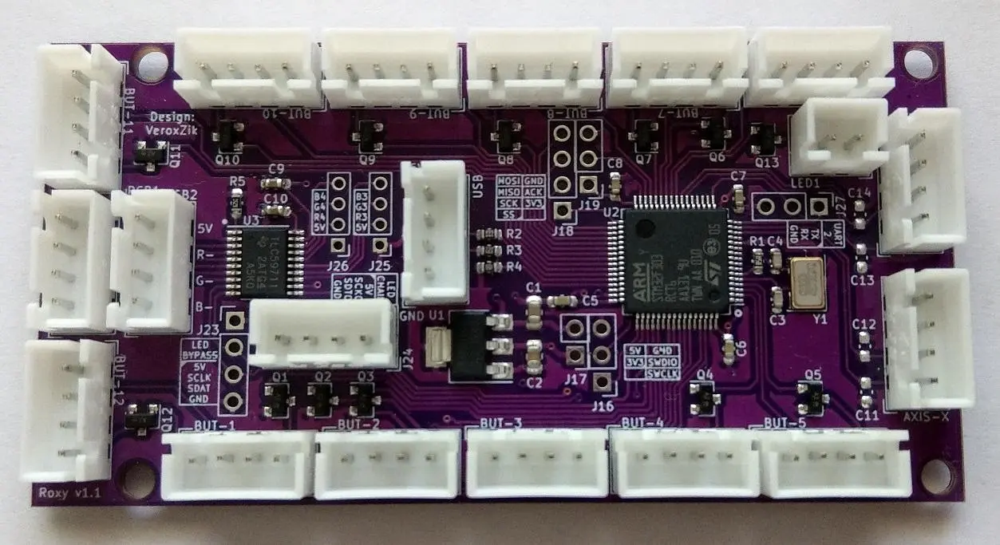

SDVX & Yuancon FAQ Guide
Controller Information
| Specification | Chinese | Sanwa |
|---|---|---|
| Button Size |
START: 33×33mm BT: 60×60mm FX: 50×33mm |
START: 33×33mm BT: 60×60mm FX: 50×33mm |
| Springs | 60g | 100g |
| Switches | 0.25N (Omron VX-5-1A2) | 0.49N (Omron D2MV-01-1C3) |
General Specifications
| Specification | Details |
|---|---|
| Controller Size | 43×21×6.8cm |
| Screw Size | M4x12mm and M4x6mm |
| Knob Height | 2.8cm |
| Weight | 4.2kg |
Controller Parts
| Part | Chinese | Sanwa |
|---|---|---|
| Start Button | Buy Start Buttons | Buy Start Buttons |
| BT Buttons | Buy BT Buttons | Buy BT Buttons |
| FX Button | Buy FX Buttons | Buy FX Buttons |
| Springs | Buy 20g | Buy 40g | Buy 60g | Buy 20g | Buy 40g | Buy 60g |
| Switches | Buy 25g | Buy 50g | Buy 100g | Buy 25g | Buy 50g | Buy 100g |
| LED (Wedge Clear) | Buy LED | Buy LED |
Check out Rhythm Cons for more links :D
Different Modes
Hold specific button combinations while plugging the controller into your PC to enter a mode. The selected mode is saved on board.
If you have a newer SDVX Controller, you can skip holding the START button when switching modes.
Keyboard + Mouse Mode
Buttons act as keys, knobs control the mouse.
Hold: START + BT-A
Controller + Mouse Mode
Gamepad input for buttons, knobs control the mouse.
Hold: START + BT-B
Controller HID Mode
Gamepad input for buttons, knobs acts as gamepad joystick.
Hold: START + BT-C
Update Mode
Lights up all buttons for firmware updates.
Hold: FX-L + FX-R
Yuancon Setup
Quick setup instructions for using your Yuancon with popular rhythm game titles.
Make sure your controller has the latest firmware installed before following the setup steps.
Unnamed SDVX Clone
- Use Mode 3.
- Open Settings > Input tab.
- Set Button Input Mode and Laser Input Mode to Controller.
- Set Selected Controller to Yuancon.
- Go to the top and map your controller in the Key Bindings section.
- Adjust Laser Sensitivity (recommended: 1.875 or whatever feels best for you).
-
If you're hitting notes too early or late:
- Go to the Game tab and use Calibrate Offsets.
- Try using the Calibration chart from KSM.dev.
- Done. Have fun!
K-Shoot Mania
- Use Mode 3.
- Go to Option > Key Configuration.
- Change "Keyboard 1" to "Gamepad 1" (press right twice).
- Map your buttons using the arrow keys and controller. (Knobs cannot be mapped – this is normal.)
- Go to Input / Judgement Settings.
- Scroll to Input Type of Laser Object and select Analog Stick X/Y.
- Adjust knob sensitivity in Slider/Mouse Signal Sensitivity.
- Restart the game.
- Done. Have fun!
Source: stlr_lly on Discord
SOUND VOLTEX
- Use Mode 3.
- If Mode 3 doesn’t work, try using Mouse2key to map your controls as a workaround.
- Done. Have fun!
Frequently Asked Questions
Answers to miscellaneous FAQs not covered in the above sections.
My controller didn't include an Allen key nor screwdriver. What should I do?
The controller uses a 2.5mm Hex Allen key to unscrew the knobs and case.
If you have a v1 Yuancon, you'll also need a size #2 screwdriver to open the case.
I ordered a Sound Voltex Controller, and it's stuck on "payment received." How long
will it take to be shipped?
It takes about 1 week to build the controller and 5-7 days to ship, depending on your location.
Is there a way to replace the paper inside the buttons?
Yes, you can replace the paper with custom cuts in these sizes:
- START: 2.1x2.1cm
- BT: 4.6x4.6cm
- FX: 3.7x1.9cm
After cutting the paper, you'll need to disassemble the controller to replace it.
My knobs feel too loose or tight. What can I do?
Check the video below for instructions on how to adjust the knob tension.
My buttons are getting stuck. How can I fix this?
You can sand the edges of the button or watch the video below for tips on cleaning your buttons.
How do I replace my buttons or springs?
Replacing buttons or springs is simple. Watch the first video for v1, the second for v2, and the third if you're switching to Sanwa.
How do I assemble or disassemble my Yuancon?
Watch the video below for step-by-step instructions. It might take a little longer the first time.
My controller arrived damaged, what can I do?
If any parts are damaged, message yuan0312 on Discord. You can also join the Discord server at:
Will customs charge me import tax?
This varies depending on your country. You'll need to check your country's import tax rules. Some customers received their controller without having to pay taxes.
What's the difference between CMOD, XMOD, and MMOD?
CMOD: Constant Hi-Speed with no changes. (cheater mod)
XMOD: Multiply by BPM. (default SDVX hi-speed behavior)
MMOD: Finely tuned speed that can be locked in to persist between songs. (SDVX floating hi-speed behavior with double tap start/red number when locked in)
Is there a guide for building an SDVX Controller?
Yes, you can find guides for building an SDVX Controller and a Pocket SDVX Controller.
My controller has no input. What should I do?
Try connecting the controller to a USB 2.0/3.0 port. If you're using a USB hub, make sure it has enough power. If that doesn't work, open the case and check for unplugged cables.
How can I make the Yuancon buttons brighter?
To make the buttons brighter, you can disconnect the RGB lights or short the resistors marked "RL" (only for older models).
Does Yuancon support Linux?
Yuancon doesn't support Linux officially, but it can work on Linux with a few steps. There are three methods currently available.
Method 1
Requirements:
- Xorg display server
- The controller must be in Mode 1
- Install
evdev -
Create a file named
10-yuancon.confin/etc/X11/xorg.conf.d/containing:Section "InputClass" Identifier "Yuancon" MatchProduct "YuanCon YuanCon Mouse" MatchDevicePath "/dev/input/event*" Driver "evdev" EndSection - Restart the X server or your PC
Source: stlr_lly on Discord
Method 2
Requirements:
- Xorg display server
- The controller must be in Mode 3
-
Install
libinput -
Create a file named
10-yuancon.confin/etc/X11/xorg.conf.d/containing:Section "InputClass" Identifier "Yuancon" MatchProduct "YuanCon YuanCon Mouse" MatchDevicePath "/dev/input/event*" Driver "libinput" EndSection - Restart the X server or your PC
Source: Oxystyle#3791 on Discord
Method 3
Requirements:
- The controller must be in Mode 1
-
Create a file named
99-yuancon-sdvx.rulesin/etc/udev/rules.d/containing:ACTION=="add|change", KERNEL=="event[0-9]*", \ ENV{ID_VENDOR_ID}=="51bf", ENV{ID_MODEL_ID}=="2101", \ ENV{ID_INPUT_MOUSE}="1" -
Use
udevadm control --reload-rulesto reload.
Source: clam#9791 on Discord
What kind of lubricant should I use for my buttons/knobs?
Use Silicone or Lithium-based lubricants for your buttons and knobs.
My USB-C connector is loose or broken. What should I do?
If it’s loose, try adding more solder. If it’s broken, follow the video below to solder it back. Alternatively, message yuan0312 on Discord for a replacement.
Is there a replacement PCB for my controller?
Yes, there is! It's called Roxy and was designed by vxzk.

Are there any Discord servers I can join?
Yes, there are a few Discord servers you can join:
If you know of any other Discord servers, feel free to let me know! :)
Help! I'm having issues with USC!
If you're facing issues with USC, check out their FAQ page for help.
Where are the song packs from, and are they updated?
SDVX I-II song packs are from here, SDVX III-IV are from the K-Shoot Mania Discord. These packs have updated difficulties for VW rerates and VividWave changes using KshootmaniaDifficultyChanger & VW Diff KSH Replacement. SDVX V packs are from here, and SDVX VI packs are also from the K-Shoot Mania Discord.
How can I get a custom acrylic panel for my Yuancon, and how much does it cost?
To get a custom acrylic panel, design it and send it to
yuan0312 on Discord. The cost is $35 (subject to
change).
If you need the SVG file for YuanCon,
click here.
For the PSD file,
click here.
I get an error on USC: "Could not open selected gamepad." What should I do?
Unplug any gamepad devices and see if it works. If not, go to the USC directory, open Main.cfg, find Controller_DeviceID, and set it to 0. That should fix the issue.